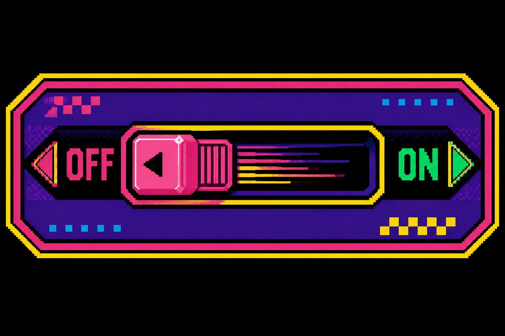

testing this switch: OFF

Eventuality is not causality. This switch is not a cause, but a test of the illusion of causality.
CLICK-CLOWN
The goal is to make the clown change when the switch is flipped, instead of when he is clicked on. He can be assigned to the same switch, but I made him into his own image cycler for now...
The villain is going to be a TV on a unicycle wheel with a skull on the screen. Here is the link above that goes to the prototype game console [The Skeleton Circus Game Console]!